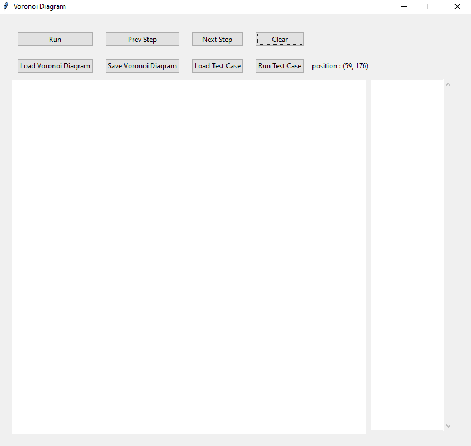
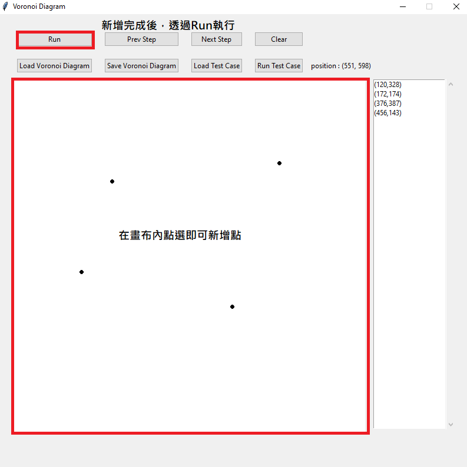
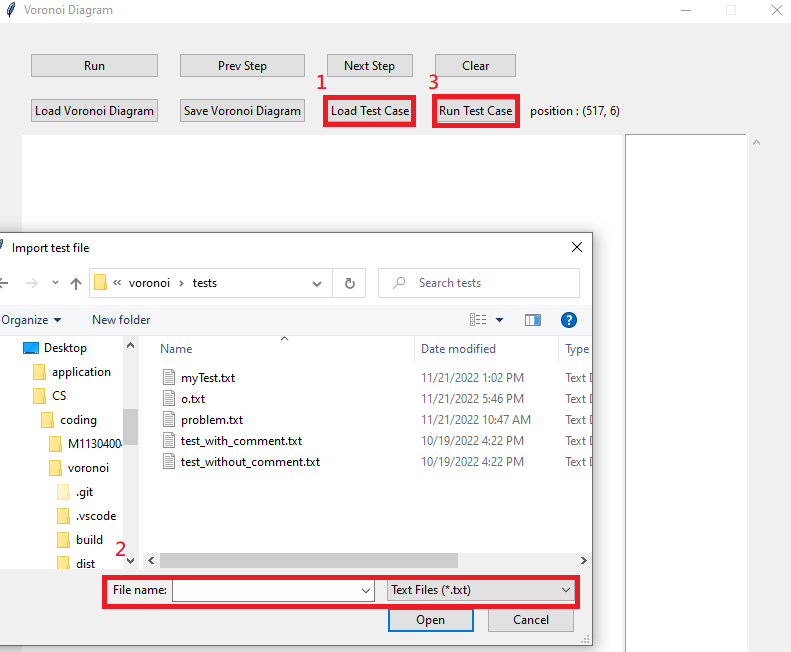
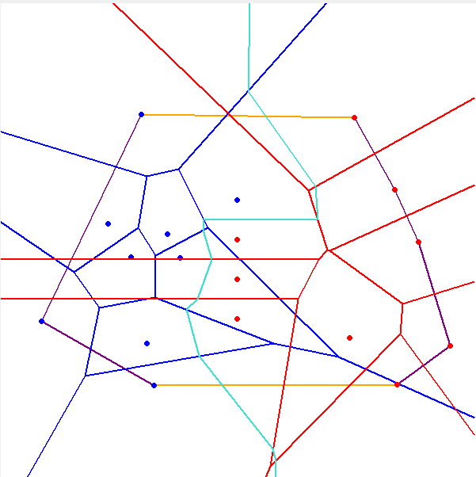

輸入資料規格：
- 使用滑鼠在畫布上任意點擊，畫布大小為600
- 使用「Load Test Case」，讀取多個測試資料(每個測試資料有多點)
- 輸入格式每組點的開頭先輸入總數，接續則為每個點的x軸及y軸，範例如下:
4
103 200
193 64
193 370
283 200
5
124 200
244 260
357 214
457 537
059 345
輸出資料規格：
- 點選Sava Voronoi Diagram存取執行結果
- 輸出檔個格式如下:
輸出的座標點：P x y // 每個點佔一行，兩整數 x, y 為座標。
線段：E x1 y1 x2 y2 // (x1, y1) 為起點，(x2, y2) 為終點，其中 x1≦x2 或 x1=x2, y1≦y2。
座標點排列在前半段，線段排列在後半段。座標點以 lexical order順序排列(即先排序第一維座標，若相同，則再排序第二維座標；線段亦以 lexical order順序排列)。
P 103 200
P 193 64
P 193 370
P 283 200
E 0 34 193 161
E 0 363 193 261
E 193 161 193 261
E 193 161 437 0
E 193 261 600 476
主介面
功能
-
Run:
透過滑鼠產生點，執行Run即可產生對應的Voronoi Diagram。
-
Prev Step:
透過step by step的方式產生下一步merge的畫面。
-
Next Step:
透過step by step的方式產生前一步merge的畫面。
-
Clear:
將目前畫面及所產生的資料清除。
-
Load Voronoi Diagram:
將產生的Voronoi Diagram匯出(包含線段及點)。
-
Sava Voronoi Diagram:
將產生的Voronoi Diagram匯出(包含線段及點)。
-
Load Test Case:
將多組Test Cases匯入(每組包含多個點)。
-
Run Test Case:
透過此按鍵依序執行匯入的多組Test Cases。
軟體測試規劃書
測試資料:
- 2點: 0次Merge及完成，主要測試程式是否能解base case
- 3 ~ 6點: 1~多次Merge，測隨機點及edge case有(所有點x軸相同、所有點y軸相同、hyperplane與merge前線段的焦點在畫布外、正方形)
- 7點以上，測隨機點並且檢查是否有正常消線
安裝說明
下載檔案後，直接在windows的環境執行"vorornoi.exe。"
使用說明
-
於畫布中繪製點，並透過Run執行。
 -
匯入test case，並透過Run Test Case依序執行每個Test case。
 -
當畫面上有點時，可以透過Prev Step及Next Step來查看此Voronoi Diagram的merge步驟(藍:left vorornoi;紅:right voronoi;綠:hyperplane;紫:convex hull; 橘:upper/lower tangent)。
-
當執行完成時可以透過Sava Voronoi Diagram來匯出檔案，未來能夠透過Load Vorornoi Diagram來匯入之前儲存的檔案。

資料結構
-
Point
x: float
y: float
edges: list[Edge] #用來記錄目前這個交點與哪幾條Edge相連，在消線時使用
-
Line
以方程式ax+by=c的方式分別記錄xCoefficient, y Coefficient及constant
# 以方程式ax+by=c的方式做紀錄，用來計算交點
xCoefficient: float
yCoefficient: float
constant: float
-
Face
# Voronoi Diagram中被線段圍起的點
point: Point
edges: list[Edge] #關聯所有包為此點的線段
-
Edge
start: Point
end: Point
startInfinity: bool # 紀錄此線段在途中是否為無限延伸
endInfinity: bool
twinEdge: 'Edge' # 每個線段都有2條，其起點與終點剛好相反
line: 'Line' # 線段方程式，用來找交點
face: 'Face' # 線段關聯到其對應的Face
-
VoronoiGraph
canvasWidth: int
canvasHeight: int
faces: list[Face] # 紀錄voronoi graph中所有的face
edges: list[Edge] # 紀錄voronoi graph中所有的edge。目前尚未使用。
voronoiPoints: list[Point] # 紀錄voronoi graph中線段的交點。目前尚未使用。
convexHull: list[Point] # 紀錄目前voronoi graph中的convexhull(逆時針)
mergeRecords: list[MergeRecord] # step by step的執行紀錄
演算法
-
Convex hull O(n)
1. 左邊convex hull最右邊的點設為lPoint、右邊convex hull最左邊的點設為rPoint，以此2點當作基準edge。
2. 先以lPoint當作基準找rPoint上方的點，以lPoint與此點組成新的線段，比較原本線段與新線段是否為逆時針旋轉，如果是的話以此新線段為基準並繼續往上找直到基準線段與新線斷變成順時針旋轉，代表找到目前右邊最上方的點。
3. 先以步驟2找到的rPoint當作基準找lPoint上方的點，以rPoint與此點組成新的線段，比較線段與新線段是否為順時針旋轉，如果是的話以此新線段為基準並繼續往上找直到基準線段與新線斷變成逆時針旋轉，代表找到目前左邊最上方的點。
4. 2、3步驟不能保證一定能找到2邊convex hull的上切線，必須重複2、3步驟直到直到2邊的點都不再變動，才找到上切線。
5. 下切線與上切線的找法相同。
6. 將上下切線與原本左convex hull與右convex hull組合成新的convex hull。
-
Hyperplane O(n)(線段最多3n-6，此演算法美找一個切點會將face往下移，所以不會重複尋找線段)
1. 使用convex hull所找到的upper tangent為基準，左邊的點稱為left face，右邊的點稱為right face，以此2點找中垂線。
2. 此中垂線與包圍left face及right face的線段找交點，找與中垂線第一個相交的線段，此交點為此段bisector的終點及下一段bisector的起點。
3. 如果相交的線段為左半邊的線段，則將left face設為與此線段對面face。如果相交的線段為右半邊的線段，則將right face設為此線段對面的face
4. 迴圈執行2, 3步驟直到left face和right face為lower tangent的2端點
5. 將上述相交線段的端點重新設至相交的點，由於線段縮減所以需要將原本與此端點相連的線段刪除(透過順逆時針及線段為屬於左邊還右邊的voronoi來判斷)
6. 由於步驟5只刪除直接與縮減線段端點相連的線段，因此掃描所有線段判斷其端點如果只有參照到自己這條線段，則代表此線段沒有與其他線段相連，因此刪除(端點無限延伸的端點只會參照的自己這條線段，所以不用刪除)
測試環境
- 作業系統： Windows 10 Pro (Version: 21H1)
- 處理器: 11th Gen Intel(R) Core(TM) i5-1135G7 @ 2.40GHz 1.38 GHz
- RAM: 24.0 GB
- 程式語言: python 3.10.7
實驗結果
目前大部分的測資都可以成功，但之前有隨機點過100多點的有進入無窮迴圈，由於當下沒有記錄測資因此目前尚無法重現
資料結構主要是參考教授指定的資料，但在實際實作時有些地方還不知道要如何記錄較為洽當，因此就直接先略過並以其他方式關聯去取得(VoronoiDiagram，edges和voronoiPoints都尚未使用，目前是透過Face去找出其關聯來找出Edge及Edge的端點(線段交點又稱voronoi point)，未來在修改程式時必須將程式實作的部分稍作修改，有效的使用所定義的資料結構以降低不必要的運算。
在畫hyperplane及刪除不必要線段時會有許多細節需要去做處理，因為目前尚未想到簡潔的時作方法，因此在程式內加入了許多額外的判斷來進行處理，導致程式的可讀性即可修改性較差，這是未來能夠改進的部分。
最後，此程式雖然大部分的test case都可以成功，但其中還是有失敗的時候，所以可能要針對失敗的case去找出程式內哪裡的邏輯有誤並進行修改。